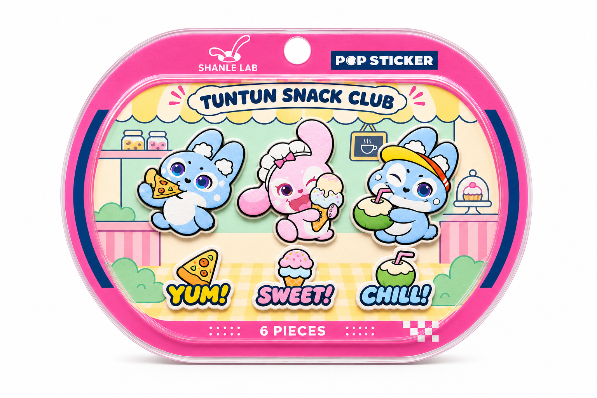
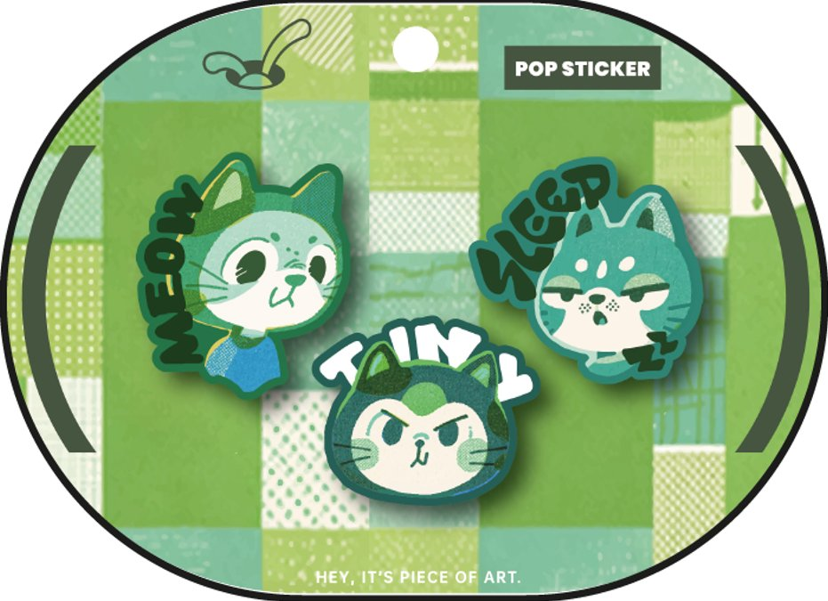
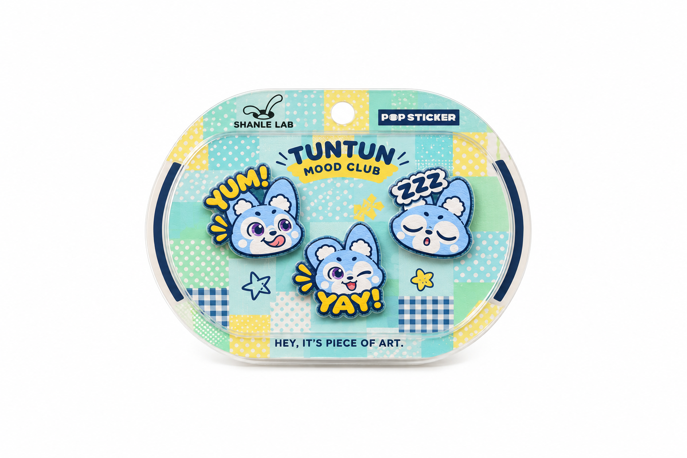
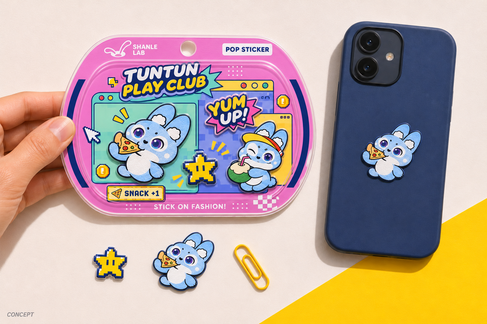
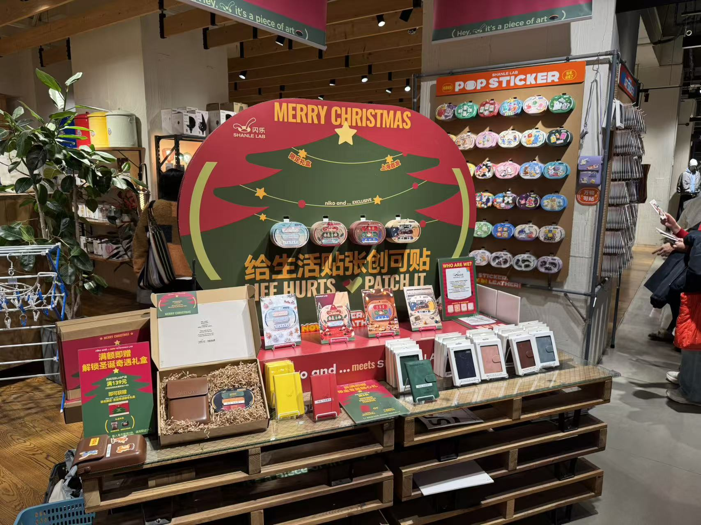
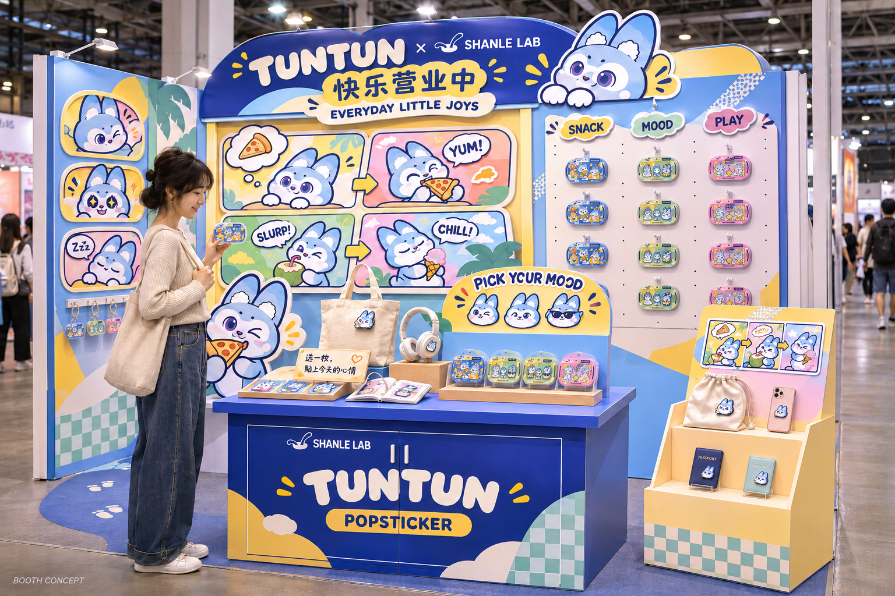

TUNTUN × POP STICKER
从萌宠原画，
到随身小剧场。
把可爱的角色做成一包有趣的贴纸，再让它走进手机、包包和真实的售卖空间。这是一轮围绕内容、品牌与实物比例，逐步收敛的设计过程。
浏览设计过程- 2款
- 产品视觉已定稿
- 6枚
- 新组合结构已明确
- 2类
- 手机与包包应用

THE STARTING POINT
先让角色，变成可使用的商品。
最初的任务是将 TUNTUN IP 转化为啵啵贴，并沿用 niko and… 与 MLBB 的陈列思路探索中岛、特装展位。随后加入三张角色原画，扩展出新的零食主题组合。


角色有辨识度，但商品尺寸不够写实，包装外形有偏差，展位内容也不够丰富。下一步需要同时解决趣味性与实物可信度。
DESIGN REFERENCES
从现有萌宠款，找到两条路径。
回到已有商品的内容组织方式，参考表情、短语、色块与角色的关系。贴纸内容和纸卡背景先收敛，再修正品牌与包装。
今天是什么表情？
沿用 063 的表情与文字组合逻辑，用 YUM / ZZZ / YAY 区分角色状态；纸卡承接一组统一的情绪主题。




快乐加一格。
参考 052 的街机窗口、层叠色块与角色互动，让披萨、椰子、奖励星和短语组成一个可以拆开使用的小场景。



两款定稿包含贴纸内容、纸卡、两套品牌标识与包装外形；定稿原图保持不变。
BRAND & REAL PACKAGE
好看的图，也要对得上真实商品。
内容认可之后，集中修复三处：完整品牌标识、专用产品字标、真实包装轮廓。重新以实体包装正面照片和固定轮廓为依据。


完整品牌组合
使用原始兔耳图形与下方单行横排英文的完整组合，保留图形与文字关系。
专用产品字标
沿用原始字形：P 内星形镂空、O 内双弧线，保持专用标识的辨识度。
实体轮廓统一
以固定轮廓为准，连同横向比例、短平段及侧边弧线一起核对。
尺寸记录仍有待核验之处；包装视觉定稿与生产刀模、实物打样分别管理。
THE RETAIL EXPERIENCE
给展位增加内容，给商品保留尺度。
最新 niko and… 现场照片提供空间参照；Meeko 的连续日常故事与跨物件应用，帮助丰富看故事、选款和试贴的体验。


从陈列，走向体验。
保留木托盘、挂货与生活周边的空间关系，用应用立牌讲内容，售卖包装保持小商品的相对大小。
- 看故事连续漫画与表情窗口
- 选商品按主题分组挂货
- 试着贴手机、包包与生活物件应用


STICK IT INTO EVERYDAY LIFE
拿在手里，贴进日常。
产品之外，补齐手持包装、手机和包包应用。用成人手掌、完整手机和包身建立尺度参照，展示每枚贴纸实际如何参与搭配。


THE SIX-PIECE ASSORTMENT
三只兔子，三枚食物英文小贴。
新增组合经过数量与连接关系的澄清，明确为六枚。三只兔子各自独立；小食物与英文分别连成一枚，让包装排布和切边关系更清楚。

角色贴
披萨兔／冰淇淋兔／椰子兔
三只兔子保持独立，英文不接在兔子身上。
食物英文连体小贴
披萨＋YUM!／冰淇淋＋SWEET!／椰子＋CHILL!
每组食物与英文合为一枚。

展开组合方式的修订记录
角色、食物、英文分别独立，数量过多、排布拥挤，细碎切边不合适。
一度将角色与英文合并为三枚，随后根据最新澄清重新拆分角色与小贴。
三只兔子独立，另配三枚食物英文连体小贴，物理数量与组合关系都明确。
DECISIONS & NEXT STEPS
定稿、候选、生产，各有明确边界。
| 成果 | 当前状态 | 后续工作 |
|---|---|---|
| 表情组合／街机拼贴 | 用户确认产品视觉定稿 | 保留定稿原图 |
| 最新六枚组合 | 结构明确，图像待评审 | 确认包装图与六枚展开图 |
| 手机／包包应用 | 已生成，待评审 | 确认搭配与视觉尺度 |
| 中岛／故事展位 | 概念方案，待评审 | 场地实测与结构落图 |
| 生产准备 | 尚未完成 | 核验实物尺寸、刀模与试切 |
这轮留下的工作方法
先锁定原画、原始标识、标准包装轮廓和每枚贴纸的组合关系，再做包装与场景。包装用实物照片核对，应用用完整物件核对，空间用现场关系核对。